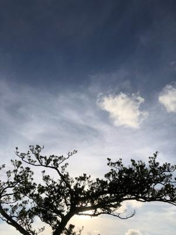
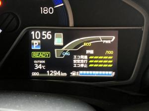
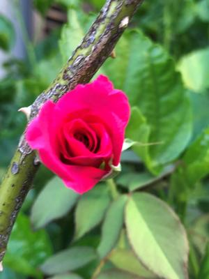

うるがいの話 ある日
最新: ３５度【うるがいの話 ある日】とは 一日だけのプログです
『うるがいの話』の最新一日だけのプログで、通信料が少なく経済的だ。カニの画像をクリックすると全ての日付が載る『うるがいの話』サイトを表示します
|
|
【うるがいの話】 うるがい(ｳﾙｶﾞｲ urugai)とは、『もずくがに』の名前でとても大きくなります。 |
|---|---|
|
|
【カミマヤーの話】 猫のことを方言でマヤーといいます。カミマヤー（kamimayaa）とは、神の猫のことです。 |
|
【たながぁの音楽】 たながぁ（ﾀﾅｶﾞｰ tanagaa）とは手長えびのことで、何種類かあり大きいのは車 エビぐらいになります。 |

|
【ぶながぁの話】 ぶながぁ(ﾌﾞﾅｶﾞｰ bunagaa)とは、赤い髪の毛、赤い身体、そして身長は１ｍ２０ｃｍ ぐらい、川の蟹を食べているの目撃された。場所は沖縄県国頭郡大宜味村のと ある村僕の隣近所に住んでいる爺さんから、聞いた話です。 |
|
|
【ギーマの話】 ギーマ(giima)とは、山原の里山に咲くスズランに似た、 花を付けます。実は食べられます、 気が付くと口の周りが紫になっています。 |
2022年08月25日 (木）３５度
16:35
  
午前１１時におもろまちから、家に戻るとき、車の外の温度を示すメーターが
３５度を指していた。ヨメの４回目のワクチン接種に付き添って会場で測った
私の温度が３６度、ほぼ体温に近い！。先週の週間予報では今週から、天気は
下り坂になり温度も下がる予定だったが、近頃は予報は外れ大概が晴れになっ
ている。今朝の５時前の室内温度が３０．９度、朝からでっせ。扇風機も三段
階の中を選択しないと、暑い。先々週の私のワクチン接種より、若干早めに会
場に入ったため、ヨメは３番目だった。この調子では、私より少し早いかと思
ったら、なかなか会場から出てこない。２名の医者が、一緒に遅刻下との事。
困ったもんだ、会場はそのため混沌としていた。そのあと、施設へ利用料金を
ヨメが払いにいった。従業員の話では、ヨメのお母さんはすっかり元にもどり
、『私の人生は不幸だった』と、以前のように廻りに語っていると報告を受け
た。
１６時３０分 ビットコインの総資産 ￥８、５８５↑